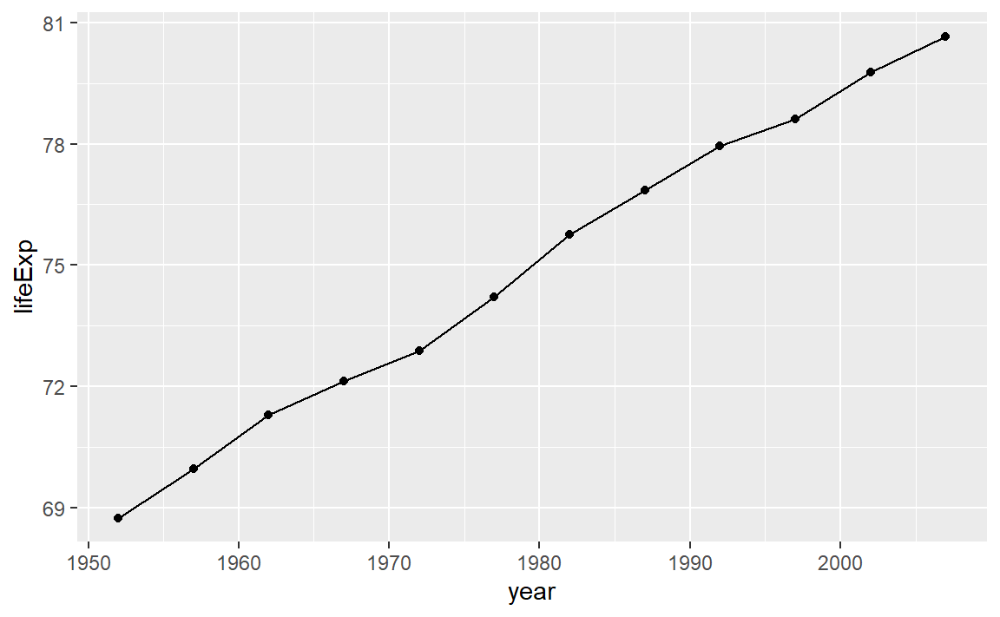
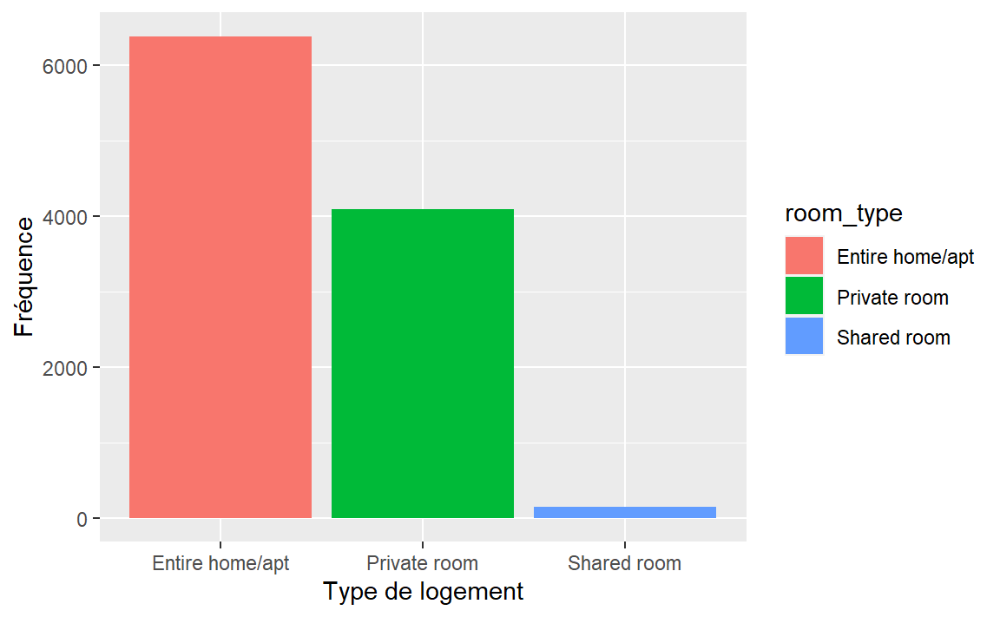
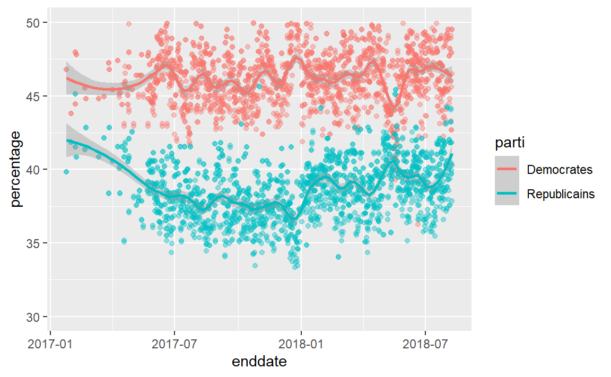

Chapitre 17 Les séries chronologiques
Une série chronologique est un ensemble de valeurs observées d’une variable quantitative. Elle permet d’analyser l’évolution de cette variable dans le temps dans le but éventuel de faire des prévisions. Le tableau utilisé pour représenter les données d’une série chronologique comporte une colonne pour la période ainsi qu’une colonne pour la valeur observée.
Pour ce chapitre, nous utiliserons la librairie gapminder.
17.1 Mise en place
library(tidyverse)
library(questionr)
library(gapminder)
library(knitr)canada <-
gapminder %>%
filter(country %in% c("Canada")) %>%
select(year,lifeExp)
canada
#> # A tibble: 12 x 2
#> year lifeExp
#> <int> <dbl>
#> 1 1952 68.8
#> 2 1957 70.0
#> 3 1962 71.3
#> 4 1967 72.1
#> 5 1972 72.9
#> 6 1977 74.2
#> # ... with 6 more rowsggplot(data = canada, aes(x = year, y = lifeExp))+
geom_line()+
geom_point()
Le génocide Rwandais…
gapminder %>%
filter(country %in% c("Rwanda")) %>%
select(year,lifeExp) %>%
ggplot(aes(x = year, y = lifeExp))+
geom_line()+
geom_point()17.2 Criminalité à Montréal
# On lit les données disponibles sur le web.
criminalite <- read_csv("https://data.montreal.ca/dataset/5829b5b0-ea6f-476f-be94-bc2b8797769a/resource/c6f482bf-bf0f-4960-8b2f-9982c211addd/download/interventionscitoyendo.csv", locale = locale(encoding = 'ISO-8859-1'))
#criminalite <- read_csv(here::here("data","criminalite-2015-2018.csv"), locale = locale(encoding = 'ISO-8859-1'))criminalite %>%
group_by(CATEGORIE, DATE, QUART) %>%
summarise(Nombre = n()) %>%
ggplot(aes(x = DATE, y = Nombre, color = QUART))+
geom_line()+
facet_wrap(~ CATEGORIE)
#> `summarise()` has grouped output by 'CATEGORIE', 'DATE'. You can override using the `.groups` argument.criminalite %>%
filter(DATE > "2016-06-30" & DATE < "2016-08-01") %>%
group_by(CATEGORIE, DATE, QUART) %>%
summarise(Nombre = n()) %>%
ggplot(aes(x = DATE, y = Nombre, color = QUART))+
geom_path()+
facet_wrap(~CATEGORIE)
#> `summarise()` has grouped output by 'CATEGORIE', 'DATE'. You can override using the `.groups` argument.
#> geom_path: Each group consists of only one observation. Do you need to adjust
#> the group aesthetic?17.3 Airbnb
Sur le site où les données ont été prises, nous pour vons utiliser une autre base de données calendar. Par contre, le fichier fait 100 Mo et prend plusieurs minutes à être lu par read_csv. On pourrait unir les deux bases de données pour connaître le nombre moyen de jours d’occupations, etc…
On veut retrouver les statistiques calculées ici airbnb montreal.
airbnb <- read_csv("http://data.insideairbnb.com/canada/qc/montreal/2016-05-04/visualisations/listings.csv")
#airbnb <- read_csv(here::here("data", "airbnb-listings-mtl.csv"))
#calendar <- read_csv(here::here("data", "airbnb-calendar-mtl.csv"), n_max = 526400)17.3.1 Catégorie de logement
kable(freq(airbnb$room_type,
total = TRUE,
valid = FALSE))| n | % | |
|---|---|---|
| Entire home/apt | 6377 | 60.1 |
| Private room | 4092 | 38.5 |
| Shared room | 150 | 1.4 |
| Total | 10619 | 100.0 |
ggplot(data = airbnb, mapping = aes(x = room_type, fill = room_type))+
geom_bar()+
labs(
x = "Type de logement",
y = "Fréquence"
)
La moyenne du prix par nuit.
mean(airbnb$price)
#> [1] 90.617.3.2 Availability
Création d’une nouvelle colonne pour avoir haute (plus de 90 jours par année) et basse (90 jours ou moins par année) disponibilité.
airbnb_av <- airbnb %>%
mutate(disponibilite = if_else(availability_365 > 90, "haute", "basse"))kable(freq(airbnb_av$disponibilite,
total = TRUE,
valid = FALSE))| n | % | |
|---|---|---|
| basse | 3774 | 35.5 |
| haute | 6845 | 64.5 |
| Total | 10619 | 100.0 |
Les logements sont disponibles en moyenne combien de jours par année?
mean(airbnb$availability_365)
#> [1] 197ggplot(data = airbnb, mapping = aes(x = availability_365))+
geom_bar()+
labs(
x = "Nombre de jours disponibles par année",
y = "Fréquence"
)17.3.3 Nombre de logements par hôtes
Création d’une nouvelle colonne pour savoir si l’hôte possède un seul logement ou plusieurs.
airbnb_mult <- airbnb %>%
mutate(multi = if_else(calculated_host_listings_count > 1, "Multi", "Unique"))kable(freq(airbnb_mult$multi,
total = TRUE,
valid = FALSE))| n | % | |
|---|---|---|
| Multi | 3336 | 31.4 |
| Unique | 7283 | 68.6 |
| Total | 10619 | 100.0 |
ggplot(data = airbnb, mapping = aes(x = calculated_host_listings_count))+
geom_bar()+
labs(
x = "Nombre de logements au nom de l'hôte",
y = "Fréquence"
)17.4 DSLABS
La librairie
17.5 FIVETHIRTYEIGHT
library(fivethirtyeight)
#> Warning: le package 'fivethirtyeight' a été compilé avec la version R 4.0.5
#> Some larger datasets need to be installed separately, like senators and
#> house_district_forecast. To install these, we recommend you install the
#> fivethirtyeightdata package by running:
#> install.packages('fivethirtyeightdata', repos =
#> 'https://fivethirtyeightdata.github.io/drat/', type = 'source')polls <- as.tibble(generic_polllist)
polls %>%
select(enddate, pollster, adjusted_dem, adjusted_rep) %>%
rename(Democrates = adjusted_dem, Republicains = adjusted_rep) %>%
gather(parti, percentage, -enddate, -pollster) %>%
mutate(parti = factor(parti, levels = c("Democrates","Republicains"))) %>%
ggplot(aes(enddate, percentage, color = parti)) +
geom_point(show.legend = FALSE, alpha=0.4) +
geom_smooth(method = "loess", span = 0.15) +
scale_y_continuous(limits = c(30,50))
#> `geom_smooth()` using formula 'y ~ x'
#> Warning: Removed 78 rows containing non-finite values (stat_smooth).
#> Warning: Removed 78 rows containing missing values (geom_point).